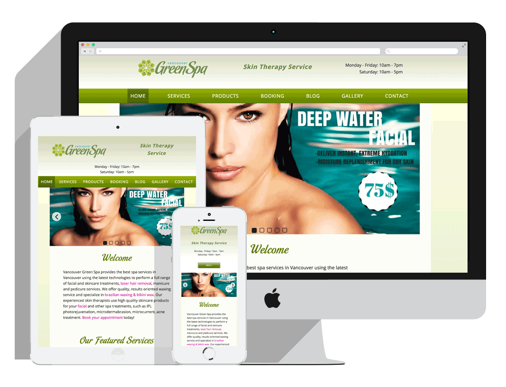

This page is dedicated to coming MS Office 2019 version. Based on design requirements I used following CSS3 features such as svg transform for animation, gradients for interesting Headers effect, flex-box for layout.
Versions Comparison Page helps users easily to see most popular MS Office versions and navigate to particular one using tabs. This is a custom Magento Module which I built to encapsulate data, functionality and view for this particular page.
This is a set of pages about troubleshooting MS Office products installation, activation and other most common questions. I like this type of complex tasks, because they require to plan your workflow, organize code and file structure in advance. There are 12 pages with similar design and layouts. So in this particular case I identified design patterns and created one common stylesheet for all pages and then specific css files with individual style for each page. As result, there is only one place for editing most of the style, however it's possible to customize each page individually too if needed.
Tools:
HTML/HTML5, XML
LESS/SASS, CSS/CSS3
Javascript/jQuery
PHP/PHTML
GIT
InVision, Photoshop
Responsive Web Design (RWD)
Command-line user interface (Terminal)

Spa Salon Website
Vancouver Green Spa
Freelance Project
Completed: December 2016
This is new Wordpress website for beauty salon Vancouver Green Spa. The main goals of this project were to redesign the previous version of the site and create
modern look and feel for it without dramatical changes of the current style. In addition to that, the client wanted to edit content easily and share it on the social media platforms. Also, in scope of the project I made a research
and implementation in order to find better solution for the booking processes automatization.
Working in team me and three partners redesigned and developed new version of the current website of the artist, Aimée Henny Brown. We created responsive WordPress website using Underscores Starter Theme and the best UI/UX practices.
This was Level 02 project for HTML and CSS Course at TWD Program. In addition to code quality this work was marked by creativity and usability of the design as well.
I decided to make web site for a fictional recruitment company — “Partiendo”.
Note: layout of this project is not responsive and there are only three working pages (Home, Job Seeker and About) due to time limit.
This page was designed for mobile devices first. I used CSS3 Flexbox mode which helps elements behave predictably and Media Queries with two breakpoints at 575px and 960px.
It was small group project where me and a partner created fully responsive web page that matched to the design of the mock-up. I was responsible for aside, trending posts sections and footer. The challenging part for me was to create
responsive iframes using positioning and percentages and to fit them in given layout.
For this project we wrote our CSS using SASS and used version control system Git and stored code on GitHub.
This is a single responsive web page for a fictional radio station — “WOW Radio”.
My preferable way to create responsive content is using the CSS3 Flexible Boxes, or Flexboxes. I find the flexbox model effective and easy to use for complex layouts. For example, I can easily change order or direction of content,
horizontally or vertically align items, specify the length of a flex items etc. In my opinion, flexbox concept is a new level of creating responsive website layouts comparing with floats.
To ensure that my layout will be adaptable to any current and future devices, I prefer to set breakpoints based on content, not defined device widths. Also I use Chrome DevTools’ Device Mode and viewport controls (responsive
or device-specific mode) to test layout.
This was Level 01 project for JavaScript and jQuery Course at TWD Program.
In addition to creating matching game with traditional logic, my aim was to make fun game with animated cartoon graphic and some story. I chose space theme where a user become a scientist in an expedition to remote planets and his
goal is to find and collect new species.
Animated rocket ship in the beginning of the game and animated asteroid and aliens in the end were made by using animate.css library.
Note: layout of this project is not responsive due to time limit.